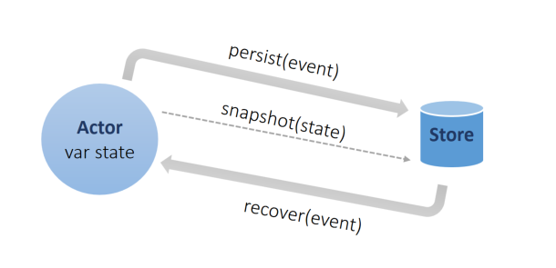

Journey through Reactive Manifesto leveraging Akka
### 1. Responsive
System responds in a timely manner if at all possible
### 2. Resilient
System stays responsive in the face of failure (replication, containment, isolation and delegation)
### 3. Elastic
System stays responsive under varying workload
### 4. Message-Driven
- Asynchronous message-passing (asynchronous boundaries)
- Loose coupling, isolation, location transparency
- Load management (back-pressure)
Actor Model - Quick overview
Higher level of abstraction for building highly concurrent, distributed, and resilient message-driven applications

Akka Stream - Quick overview

Akka Persistence - Quick overview
Enables stateful actors to persist their internal state so that it can be recovered when an actor is started, restarted after a crash

Akka Cluster - Quick overview
Fault-tolerant decentralized peer-to-peer based cluster

DEMO
 [Code & slides available at: https://github.com/HimanshuArora1234/Reactive-Akka-Presentation](https://github.com/HimanshuArora1234/Reactive-Akka-Presentation)
### Thanks very much
[Code & slides available at: https://github.com/HimanshuArora1234/Reactive-Akka-Presentation](https://github.com/HimanshuArora1234/Reactive-Akka-Presentation)
### Thanks very much